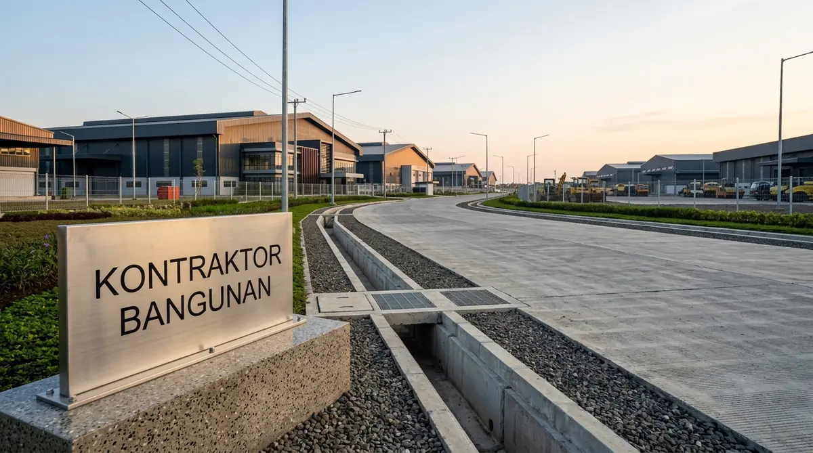

Mengapa Memilih Kontraktor Industri Berpengalaman di Pasuruan?
Kontraktor berpengalaman memahami regulasi teknis kawasan industri PIER, karakteristik tanah geoteknik dataran rendah Pasuruan, serta aksesibilitas logistik alat berat.
Konstruksi fasilitas industri memiliki dinamika berbeda dibandingkan bangunan sipil biasa karena melibatkan sinkronisasi jalur utilitas mesin produksi (process piping), kelistrikan tegangan menengah, dan ventilasi udara skala masif. Berdasarkan laporan Asosiasi Pengelola Kawasan Industri Jawa Timur 2025/2026, lebih dari 35% keterlambatan komisioning pabrik disebabkan oleh ketidaksesuaian elevasi lantai dengan jalur pipa mesin pabrikan luar negeri.
Keunggulan Kontraktor Bangunan di Pasuruan:
- Penerapan Sistem Manajemen K3 Konstruksi (SMK3): Menerapkan standar Zero Accident, inspeksi APD harian, dan sertifikasi scaffolding pipa tubular.
- Kapasitas Fabrikasi Baja Sendiri: Pemotongan plasma cutting, perakitan sambungan haunch, dan pengecatan cat anti-karat dilakukan di workshop berstandar presisi tinggi.
- Penyusunan Kurva S Realistis & Pelaporan Mingguan: Memastikan target peluncuran produksi (commercial operation date) klien tercapai tanpa penundaan.
Bagaimana Alur Kerja Konstruksi Pabrik & Gudang di Pasuruan?
Tahapan dimulai dari penyelidikan tanah geoteknik, perancangan DED struktur baja & MEP pabrik, pekerjaan pondasi tiang pancang, ereksi baja WF, hingga sertifikasi SLF.
Berikut tahapan sistematis pembangunan fasilitas industri bersama kami:
1. Uji Tanah Sondir CPT & Pengeboran Dalam
Mengetahui daya dukung tanah dan kedalaman lapisan keras untuk menentukan tipe tiang pancang beton (mini pile 25x25 atau spun pile diameter 30-40 cm).
2. Desain DED Struktur Baja & Analisis SAP2000 / Tekla
Perhitungan kapasitas momen portal baja, gording atap, ikatan angin (bracing), dan sistem talang air debit badai ekstrem.
3. Pekerjaan Substructure (Pondasi & Pedestal)
Pemancangan tiang beton dengan metode Hydraulic Static Pile Driver (HSPD) bebas getaran, pembesian pile cap, dan pengecoran kolom pedestal beton bertulang.
4. Ereksi Rangka Baja WF & Penutup Atap
Pemasangan kolom dan balok rafter baja WF menggunakan crane berkapasitas 25-50 ton, pengencangan baut torsi, dan pemasangan atap zincalume berinsulasi.
5. Pengecoran Lantai Heavy Duty & MEP
Pengecoran lantai slab on grade dengan jidar laser, tabur floor hardener sika, pembuatan sambungan gergaji saw-cut joints, dan instalasi hidran sprinkler.

Proses ereksi portal baja WF dan pengerjaan finishing lantai beton heavy duty industri di Pasuruan.
Tabel Komparasi Solusi Bangunan Industri di Wilayah Pasuruan
Tabel komparasi menyajikan estimasi biaya, spesifikasi struktur, dan peruntukan bangunan industri di kawasan Pasuruan dan sekitarnya.
| Tipe Bangunan Industri | Estimasi Biaya / m² | Spesifikasi Rangka & Lantai | Peruntukan Usaha | Keunggulan Utama |
|---|---|---|---|---|
| Gudang Logistik Standar | Rp2.600.000 – Rp3.300.000 | Baja WF 200-300, Lantai K-300 tebal 15 cm, Atap Spandek 0.4mm | Pusat Distribusi, Penyimpanan FMCG | Konstruksi Cepat & Hemat Biaya |
| Gudang High-Bay Rack | Rp3.400.000 – Rp4.200.000 | Rangka Baja WF 350-500, Lantai K-350 tebal 20 cm Super Flat | Logistik E-Commerce, Cold Storage | Tahan Beban Rak Susun Bertingkat |
| Pabrik Manufaktur Berat | Rp3.800.000 – Rp5.200.000 | Baja WF + Crane Hoist 5-10 Ton, Pondasi Spun Pile, Lantai K-400 | Industri Otomotif, Fabrikasi Logam | Mampu Menahan Beban Dinamis Mesin |
| Pabrik Higienis (Food/Pharma) | Rp4.500.000 – Rp6.500.000 | Panel Sandwich Dinding PUF, Lantai Epoxy Resin 3000 Micron, AHU | Makanan & Minuman, Farmasi, Kosmetik | Standar BPOM, HACCP, & GMP |
- Gunakan Talang Plat Besi Tebal (Tebal Minimal 2.0 mm): Hujan deras berangin di Pasuruan menuntut dimensi box gutter lebar dengan lapisan anti-karat hot-dip galvanis agar atap tidak meluap ke ruang produksi.
- Lakukan Pemadatan Subgrade CBR Minimal 6%: Pastikan pemadatan lapisan sirtu dan makadam di bawah plat lantai menggunakan vibro roller 10-12 ton guna mencegah amblasnya lantai beton.
- Pasang Turbin Ventilator & Strip Skylight: Manfaatkan ventilasi atap alami dan 8-10% atap transparan polycarbonate untuk menghemat biaya operasional penerangan dan pendingin di siang hari.
Pertanyaan yang Sering Diajukan (FAQ)
Kesimpulan Praktis
Membangun fasilitas industri di koridor Pasuruan menuntut ketelitian rekayasa struktur baja, ketahanan lantai beban berat, dan kepatuhan perizinan tata ruang yang ketat. Percayakan proyek Anda kepada mitra industri berlisensi resmi.